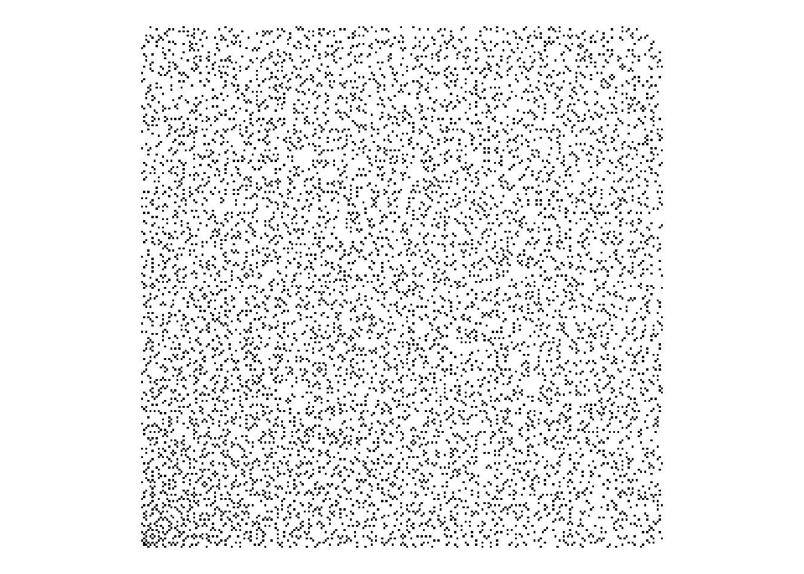
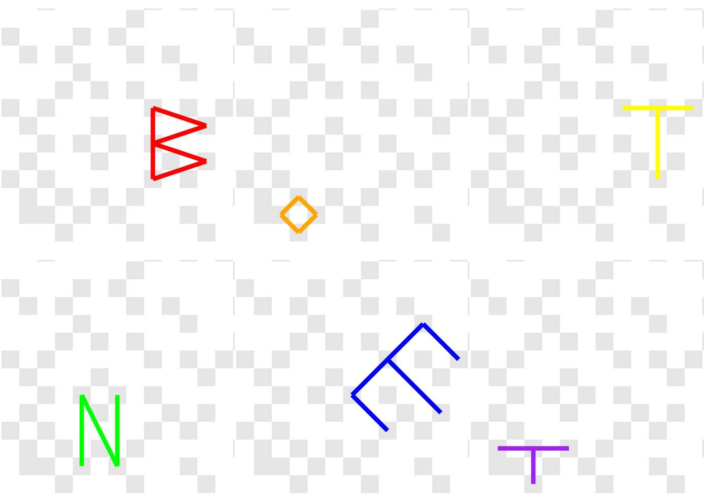

Don’t show me puzzles, unless you want to be responsible for me staying up too late solving them. I’m far too easily nerd-sniped. This one was certainly the most complex I’ve ever solved. Quite complicated too, but definitely complex (you’ll see).
Don’t show me puzzles, unless you want to be responsible for me staying up too late solving them. I’m far too easily nerd-sniped. This one was certainly the most complex I’ve ever solved. Quite complicated too, but definitely complex (you’ll see).
A few days ago a colleague of mine pointed me to this FiveThirtyEight article, which isn’t new (2018), but does feature someone else we both work with as the author of the first puzzle. Brandon is a mathematician-turned-computational-biologist/geneticist and a top-level MIT puzzler.
The puzzle in the article consists of this image (you may want to save and enlarge, yourself)
Studies in two-factor authentication
and the clue:
Ugh! Dad says the computer will hurt my eyes, but I doubt that’s his prime concern. Time to see what requires such complex security.
How could I possibly pass up an opportunity to solve such a cool puzzle?
I played with a few ideas, but can’t say I made any progress. My colleague also pointed me to a solution from the MIT puzzles website (I won’t spoil anything just yet) after which things started to make a lot more sense.
The critical words in the clue are “prime” and “complex”… we’re going to be dealing with Gaussian Primes; a special case of Gaussian Integers.
I would say “math warning” but if math scares you, you probably could do with some scaring.
A Gaussian Integer is a complex number (with a real and an imaginary part) \(z = a + bi\) where both \(a\) and \(b\) are integers. A Gaussian Integer is a Gaussian Prime
“if and only if either its norm is a prime number, or it is the product of a unit (\(\pm 1\), \(\pm i\)) and a prime number of the form \(4n + 3\)”
The first part of this requires that the norm (\(a^2 + b^2\)) is itself a prime number. This will be a positive, real integer. The alternative means that \(a=0\) or \(b=0\) and we can write the absolute value of the other (which will be prime) as \(4n + 3\) for some non-negative \(n\).
Working with complex numbers in R is actually very well supported. It’s not something
you’d work with a lot in the vast majority of data science (“the average number of
sprockets produced in the first quarter was \(2n + 3i\)”?) but R has complex as an
atomic type.
Okay, with that in mind, we can generate a bunch of Gaussian Primes. In (mostly) base R, of course. First, we’re going to need a way to determine if an integer is a prime number. We’re not worried about performance, so let’s just try to divide our target number \(n\) by every number smaller than \(\sqrt(n)\) (greater than 1); if anything divides cleanly, it’s not a prime number. That can be implemented (shamelessly stolen from StackOverflow) as
is.prime <- function(n) n == 2L || all(n %% 2L:max(2,floor(sqrt(n))) != 0)Sanity check:
is.prime(7)## [1] TRUEis.prime(131)## [1] TRUEis.prime(100)## [1] FALSENext we’ll need a way to tell if a number is a Gaussian Prime. Implementing the
definition above, and vectorizing it, involves working with the real (Re()) and
imaginary (Im()) parts of a complex number
isGP <- function(n) {
(Re(n) != 0 && Im(n) != 0 && is.prime(Re(n)^2+Im(n)^2)) ||
(Re(n) == 0 && is.prime(Im(n)) && abs(Im(n)) %% 4 == 3) ||
(Im(n) == 0 && is.prime(Re(n)) && abs(Re(n)) %% 4 == 3)
}
isGPv <- Vectorize(isGP)Sanity check:
isGP(-5-4i)## [1] TRUEisGP(3)## [1] TRUEisGP(1 + 3i)## [1] FALSEisGP(3 + 20i) # https://planetmath.org/gaussianprime## [1] TRUENow we can build a grid of integers on the complex plane and mark which are Gaussian Primes. For the sake of this puzzle, we’ll limit to 250 integers in each direction
x <- expand.grid(real = 0:249, im = 0:249)
x$complex <- x$real + (x$im)*1i
x$isGP <- isGPv(x$complex)
head(x)## real im complex isGP
## 1 0 0 0+0i FALSE
## 2 1 0 1+0i FALSE
## 3 2 0 2+0i FALSE
## 4 3 0 3+0i TRUE
## 5 4 0 4+0i FALSE
## 6 5 0 5+0i FALSEI’m solving this in base R, but we can use a package for visualising things…
library(ggplot2)
gg <- ggplot(x, aes(real, im, fill = isGP)) +
geom_tile() +
scale_fill_manual(
values = c(`TRUE` = "black", `FALSE` = "white"), guide = "none"
) +
theme_void() +
theme(aspect.ratio = 1)
gg
Careful inspection shows that this does match the puzzle image, except that the puzzle version has some additional coloured pixels… Interesting.
Reading the puzzle image (fetched directly, because Chrome wants to give me a .webp and maybe I’m getting too old to deal with that) in as pixel data into three channels (R, G, B) (yes, one external package, fine)
img <- "puzzle.png"
# download.file("https://fivethirtyeight.com/wp-content/uploads/2018/01/puzzle1.png", img)
img <- png::readPNG(img)we can rescale these to 8-bit numbers, convert to hex, then combine into hex colours
img <- list(
red = img[,,1]*255,
green = img[,,2]*255,
blue = img[,,3]*255
)
img <- lapply(img, as.hexmode)
img <- matrix(
do.call(paste0, img),
nrow = 250, ncol = 250,
byrow = TRUE
)
# identify the locations of pixels
# that are not black or white
idx <- which(! img == "000000" & ! img == "ffffff", arr.ind = TRUE)
cols <- img[idx]
d <- as.data.frame(idx)
# image reads with (0,0) top left
# so flip it
d$col <- 250 - d$col
# start at 0
d$row <- d$row - 1
d$color <- cols
head(d)## row col color
## 1 57 178 0000ff
## 2 47 140 cccc00
## 3 46 125 ff0000
## 4 60 109 0000ff
## 5 15 104 0000ff
## 6 58 103 ff0000These colours can be identified just by entering them into a search engine, or by using one of the very recent RStudio builds
known_colors <- c(red = "ff0000", orange = "ff9919", yellow = "cccc00",
green = "00ff00", blue = "0000ff", purple = "7f00cc")
d$colorname <- names(known_colors)[match(d$color, known_colors)]
head(d)## row col color colorname
## 1 57 178 0000ff blue
## 2 47 140 cccc00 yellow
## 3 46 125 ff0000 red
## 4 60 109 0000ff blue
## 5 15 104 0000ff blue
## 6 58 103 ff0000 redNow comes the hard part (and I’ll gladly admit I’d never have figured this out without seeing a solution first) - if we assume the coloured pixels represent complex numbers, and we can factor those into the product of two Gaussian Primes (remember the clue?) then we can do something with those. So, how do we find the factors? Multiplying two numbers, even complex numbers is pretty straightforward. Figuring out which two prime factors a number has (even a regular integer) is the foundation of cryptographic keys.
More searching turns up this resource which details an approach:
There are three cases:
The prime factor p of the norm is 2: This means that the factor of the Gaussian integer is 1+i or 1-i.
The prime factor p of the norm is multiple of 4 plus 3: this value cannot be expressed as a sum of two squares, so p is not a norm, but p2 is. Since p2 = p2 + 02, and there is no prime norm that divides p2, the number p + 0i is a Gaussian prime, and the repeated factor p must be discarded.
The prime factor p of the norm is multiple of 4 plus 1: this number can be expressed as a sum of two squares, by using the methods explained in the sum of squares page. If p = m2 + n2, then you can check whether m + ni or m − ni are divisors of the original Gaussian number.
This translates to: Given the norm of norm \(N\) of a Gaussian Prime, the factors of \(N\) (denoted \(p\)) will either be \(1 \pm i\), or if \(p\) is of the form \(p = m^2 + n^2\) then candidates are \(m \pm ni\).
So, we’ll need a function to operate on the norm of our Gaussian Prime. The norm itself is defined as
complexnorm <- function(z) {
Re(z)^2 + Im(z)^2
}Sanity check:
complexnorm(3 + 4i)## [1] 25We can implement the approach above as
norm_factors <- function(n) {
## N(n) %% 2 == 0
if (n %% 2 == 0) {
if (divides(n, (1+1i))) return(1+1i)
if (divides(n, (1-1i))) return(1-1i)
## N(n) %% 4 == 3
} else if (n %% 4 == 3) {
return(NULL)
## N(n) %% 4 == 1
} else if (n %% 4 == 1) {
return(sos(n))
## something's wrong
} else {
stop("this shouldn't happen")
}
}There are a couple of undefined functions here (R is fine with this; it’s lazy).
We need a way to tell if two complex numbers are “neatly” divisible, in the sense
that they produce a Gaussian Integer. I’ve called that divides() and an
implementation could be
divides <- function(x, y) {
z <- x / y
(intish(Re(z)) && intish(Im(z)))
}This relies on being able to say that a real, floating-point value looks like an integer. This is an annoying part of working with numbers - sometimes, especially if you’re doing maths, numbers aren’t precisely representable in the computer as you hope. The classic example is
0.1 + 0.2 == 0.3## [1] FALSEWhy doesn’t that work? Looks simple enough. Let’s print more digits
print(0.1 + 0.2, digits = 20)## [1] 0.30000000000000004441This is so common, there’s even a website: https://0.30000000000000004.com/
So, can’t we just use R’s is.integer()? Would I be going through this if we could?
is.integer(3) # entered as a numeric value## [1] FALSEis.integer(3L) # entered as an integer## [1] TRUEso, if we have a not-entered-as-an-integer, it’s not an integer. What about trying
to round-trip through as.integer() and comparing to the original? If x and
as.integer(x) are the same, it’s an integer, right?
as.integer(3) # makes sense## [1] 3as.integer(3.000001) # so far so good## [1] 3as.integer(3.999999) # oh, no## [1] 3so, if our value is ever so slightly under the integer, it will be rounded all
the way down to the next integer. Okay, so, how can we do this? round() rounds
towards integers, so let’s check if the absolute difference between x and round(x)
is very small
intish <- function(x) {
abs(round(x) - x) < 1e-7
}Sanity check:
# 43 + 80i = (8 + 3i)(8 + 7i)
divides(43 + 80i, 8 + 3i)## [1] TRUEdivides(43 + 80i, 8 + 7i)## [1] TRUEdivides(43 + 80i, 5 + 5i)## [1] FALSEThe other missing function is for the last condition of norm_factors(),
when the factor can be represented as the sum of two squares, so sos() could
be implemented as
sos <- function(p) {
s <- sqrt(p)
i <- seq_len(ceiling(s))
g <- expand.grid(i, i)
g$sos <- g[, 1]^2 + g[, 2]^2
opts <- unlist(g[g$sos == p, c(1, 2)][1, ])
c(round(opts[1]) + round(opts[2])*1i,
round(opts[1]) - round(opts[2])*1i,
round(opts[2]) + round(opts[1])*1i,
round(opts[2]) - round(opts[1])*1i)
}This enumerates all the combinations of integers \(i\) up to \(\sqrt(p)\) and checks if the sum of any two squares is equal to the input \(p\). If so, those are returned as candidates of the form \(m \pm ni\).
In order to use the above approach of norm_factors we need to find the prime
factors of the norm of a Gaussian Prime. We will then test each of those with
this approach.
Finding the prime factors of a regular integer is a little more straightforward (for very small integers, less than thousands; for integers with thousands of digits we get into public-key cryptography spaces). In this case, we just enumerate the integers, check if the input is divisible, and take those that are prime (according to our earlier definition)
all_prime_factors <- function(x) {
div <- seq_len(x)
f <- div[x %% div == 0]
f[sapply(f, is.prime)]
}Again, it’s StackOverflow to the rescue here. In case JD Long is reading this, you may be pleased to see that yes, your musings are still being read (and leveraged) over a decade later.
Sanity check:
all_prime_factors(325)## [1] 1 5 13Now we can put that all together into a function that finds the factors of a Gaussian Prime
GP_factors <- function(n) {
# get all prime factors of the norm of n
allf <- all_prime_factors(complexnorm(n))
# get all candidate factors of those
tests <- lapply(allf, norm_factors)
# flatten into a vector of candidates
tests <- unlist(tests)
# remove anything that didn't work
tests <- tests[!is.na(tests)]
# check if n can be divided by any candidates and keep those
tests <- tests[sapply(tests, function(x) divides(n, x))]
# check if we have a Gaussian Prime and keep those
tests <- tests[isGPv(tests)]
# only find positive real and imaginary elements
res <- tests[sapply(tests, function(x) Re(x) > 0 && Im(x) > 0)]
# the factors should be the candidate and n / candidate
# rounded to integers just to be sure
unique(unname(c(round(res), round(n / res))))
}but does it work? How about the example from earlier…
Sanity check:
# 43 + 80i = (8 + 3i)(8 + 7i)
GP_factors(43 + 80i)## [1] 8+3i 8+7iThat. Is. So. Satisfying!
Applying this to our coloured points (converted back to complex)
d$complex <- d$row + d$col*1i
d$factor_pairs <- sapply(seq_len(nrow(d)),
function(x) {
list(unique(GP_factors(d$complex[x])))
})
head(d)## row col color colorname complex factor_pairs
## 1 57 178 0000ff blue 57+178i 10+9i, 12+7i
## 2 47 140 cccc00 yellow 47+140i 8+7i, 12+7i
## 3 46 125 ff0000 red 46+125i 8+7i, 11+6i
## 4 60 109 0000ff blue 60+109i 8+7i, 11+4i
## 5 15 104 0000ff blue 15+104i 6+5i, 10+9i
## 6 58 103 ff0000 red 58+103i 8+5i, 11+6iNow we just extract the real and imaginary parts of those pairs
d$factor1 <- sapply(d$factor_pairs, `[[`, 1)
d$factor2 <- sapply(d$factor_pairs, `[[`, 2)
d$x1 <- sapply(d$factor1, Re)
d$y1 <- sapply(d$factor1, Im)
d$x2 <- sapply(d$factor2, Re)
d$y2 <- sapply(d$factor2, Im)
head(d)## row col color colorname complex factor_pairs factor1 factor2 x1 y1 x2 y2
## 1 57 178 0000ff blue 57+178i 10+9i, 12+7i 10+9i 12+7i 10 9 12 7
## 2 47 140 cccc00 yellow 47+140i 8+7i, 12+7i 8+7i 12+7i 8 7 12 7
## 3 46 125 ff0000 red 46+125i 8+7i, 11+6i 8+7i 11+6i 8 7 11 6
## 4 60 109 0000ff blue 60+109i 8+7i, 11+4i 8+7i 11+4i 8 7 11 4
## 5 15 104 0000ff blue 15+104i 6+5i, 10+9i 6+5i 10+9i 6 5 10 9
## 6 58 103 ff0000 red 58+103i 8+5i, 11+6i 8+5i 11+6i 8 5 11 6Looping over the different colors as groups, we can draw segments on our image joining the two Gaussian Prime factors. The segments are all in one corner of the plot, so I’ve zoomed in to the first dozen pixels square. I’ve also faded the Gaussian Primes to make the solution a bit clearer
gglist <- list()
suppressMessages({ # replacing fill scale
for (col in names(known_colors)) {
dcol <- d[d$colorname == col, ]
gglist[[col]] <- gg +
geom_segment(data = dcol,
aes(x = x1, y = y1,
xend = x2, yend = y2,
col = colorname),
size = 1.5,
inherit.aes = FALSE) +
coord_cartesian(xlim = c(0, 12), ylim = c(0, 12)) +
scale_color_manual(values =
setNames(d$colorname, d$colorname),
guide = "none") +
scale_fill_manual(
values = c(`TRUE` = "grey90", `FALSE` = "white"),
guide = "none"
) +
theme_void() +
theme(aspect.ratio = 1)
}
})And, finally, printing the result as a nice reveal, we can plot all of those at once
cowplot::plot_grid(plotlist = gglist, nrow = 2) This spells out “BOTNET” which is the answer to the puzzle! And what a puzzle!
I had a lot of fun solving this - I’m not sure if there was an easier way, and I definitely couldn’t have made it this far without a significant hint, but I’m very pleased that I could solve the entire thing in (mostly) base R.
As always, comments, critiques, and suggestions are welcome both here and on Twitter.
## ─ Session info ───────────────────────────────────────────────────────────────
## setting value
## version R version 4.1.2 (2021-11-01)
## os Pop!_OS 22.04 LTS
## system x86_64, linux-gnu
## ui X11
## language (EN)
## collate en_AU.UTF-8
## ctype en_AU.UTF-8
## tz Australia/Adelaide
## date 2022-10-28
## pandoc 2.19.2 @ /usr/lib/rstudio/bin/quarto/bin/tools/ (via rmarkdown)
##
## ─ Packages ───────────────────────────────────────────────────────────────────
## package * version date (UTC) lib source
## assertthat 0.2.1 2019-03-21 [3] CRAN (R 4.0.1)
## blogdown 1.13 2022-09-24 [1] CRAN (R 4.1.2)
## bookdown 0.29 2022-09-12 [1] CRAN (R 4.1.2)
## bslib 0.4.0 2022-07-16 [3] CRAN (R 4.2.1)
## cachem 1.0.6 2021-08-19 [3] CRAN (R 4.2.0)
## callr 3.7.2 2022-08-22 [3] CRAN (R 4.2.1)
## cli 3.4.1 2022-09-23 [3] CRAN (R 4.2.1)
## colorspace 2.0-3 2022-02-21 [3] CRAN (R 4.2.0)
## cowplot 1.1.1 2020-12-30 [1] CRAN (R 4.1.2)
## crayon 1.5.2 2022-09-29 [3] CRAN (R 4.2.1)
## DBI 1.1.3 2022-06-18 [3] CRAN (R 4.2.1)
## devtools 2.4.5 2022-10-11 [1] CRAN (R 4.1.2)
## digest 0.6.29 2021-12-01 [3] CRAN (R 4.2.0)
## dplyr 1.0.10 2022-09-01 [3] CRAN (R 4.2.1)
## ellipsis 0.3.2 2021-04-29 [3] CRAN (R 4.1.1)
## evaluate 0.17 2022-10-07 [3] CRAN (R 4.2.1)
## fansi 1.0.3 2022-03-24 [3] CRAN (R 4.2.0)
## farver 2.1.1 2022-07-06 [3] CRAN (R 4.2.1)
## fastmap 1.1.0 2021-01-25 [3] CRAN (R 4.2.0)
## fs 1.5.2 2021-12-08 [3] CRAN (R 4.1.2)
## generics 0.1.3 2022-07-05 [3] CRAN (R 4.2.1)
## ggplot2 * 3.3.6 2022-05-03 [3] CRAN (R 4.2.0)
## glue 1.6.2 2022-02-24 [3] CRAN (R 4.2.0)
## gtable 0.3.1 2022-09-01 [3] CRAN (R 4.2.1)
## highr 0.9 2021-04-16 [3] CRAN (R 4.1.1)
## htmltools 0.5.3 2022-07-18 [3] CRAN (R 4.2.1)
## htmlwidgets 1.5.4 2021-09-08 [1] CRAN (R 4.1.2)
## httpuv 1.6.6 2022-09-08 [1] CRAN (R 4.1.2)
## jquerylib 0.1.4 2021-04-26 [3] CRAN (R 4.1.2)
## jsonlite 1.8.2 2022-10-02 [3] CRAN (R 4.2.1)
## knitr 1.40 2022-08-24 [3] CRAN (R 4.2.1)
## labeling 0.4.2 2020-10-20 [3] CRAN (R 4.2.0)
## later 1.3.0 2021-08-18 [1] CRAN (R 4.1.2)
## lifecycle 1.0.3 2022-10-07 [3] CRAN (R 4.2.1)
## magrittr 2.0.3 2022-03-30 [3] CRAN (R 4.2.0)
## memoise 2.0.1 2021-11-26 [3] CRAN (R 4.2.0)
## mime 0.12 2021-09-28 [3] CRAN (R 4.2.0)
## miniUI 0.1.1.1 2018-05-18 [1] CRAN (R 4.1.2)
## munsell 0.5.0 2018-06-12 [3] CRAN (R 4.0.1)
## pillar 1.8.1 2022-08-19 [3] CRAN (R 4.2.1)
## pkgbuild 1.3.1 2021-12-20 [1] CRAN (R 4.1.2)
## pkgconfig 2.0.3 2019-09-22 [3] CRAN (R 4.0.1)
## pkgload 1.3.0 2022-06-27 [1] CRAN (R 4.1.2)
## png 0.1-7 2013-12-03 [1] CRAN (R 4.1.2)
## prettyunits 1.1.1 2020-01-24 [3] CRAN (R 4.0.1)
## processx 3.7.0 2022-07-07 [3] CRAN (R 4.2.1)
## profvis 0.3.7 2020-11-02 [1] CRAN (R 4.1.2)
## promises 1.2.0.1 2021-02-11 [1] CRAN (R 4.1.2)
## ps 1.7.1 2022-06-18 [3] CRAN (R 4.2.1)
## purrr 0.3.5 2022-10-06 [3] CRAN (R 4.2.1)
## R6 2.5.1 2021-08-19 [3] CRAN (R 4.2.0)
## Rcpp 1.0.9 2022-07-08 [1] CRAN (R 4.1.2)
## remotes 2.4.2 2021-11-30 [1] CRAN (R 4.1.2)
## rlang 1.0.6 2022-09-24 [1] CRAN (R 4.1.2)
## rmarkdown 2.17 2022-10-07 [3] CRAN (R 4.2.1)
## rstudioapi 0.14 2022-08-22 [3] CRAN (R 4.2.1)
## sass 0.4.2 2022-07-16 [3] CRAN (R 4.2.1)
## scales 1.2.1 2022-08-20 [3] CRAN (R 4.2.1)
## sessioninfo 1.2.2 2021-12-06 [1] CRAN (R 4.1.2)
## shiny 1.7.2 2022-07-19 [1] CRAN (R 4.1.2)
## stringi 1.7.8 2022-07-11 [3] CRAN (R 4.2.1)
## stringr 1.4.1 2022-08-20 [3] CRAN (R 4.2.1)
## tibble 3.1.7 2022-05-03 [3] CRAN (R 4.2.0)
## tidyselect 1.1.2 2022-02-21 [3] CRAN (R 4.1.2)
## urlchecker 1.0.1 2021-11-30 [1] CRAN (R 4.1.2)
## usethis 2.1.6 2022-05-25 [1] CRAN (R 4.1.2)
## utf8 1.2.2 2021-07-24 [3] CRAN (R 4.2.0)
## vctrs 0.4.2 2022-09-29 [3] CRAN (R 4.2.1)
## withr 2.5.0 2022-03-03 [3] CRAN (R 4.2.0)
## xfun 0.33 2022-09-12 [3] CRAN (R 4.2.1)
## xtable 1.8-4 2019-04-21 [1] CRAN (R 4.1.2)
## yaml 2.3.5 2022-02-21 [3] CRAN (R 4.2.0)
##
## [1] /home/jono/R/x86_64-pc-linux-gnu-library/4.1
## [2] /usr/local/lib/R/site-library
## [3] /usr/lib/R/site-library
## [4] /usr/lib/R/library
##
## ──────────────────────────────────────────────────────────────────────────────